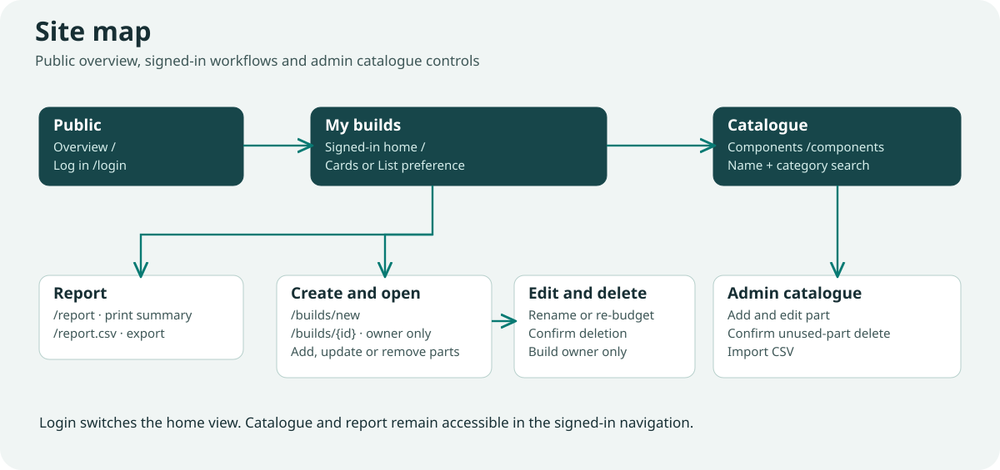
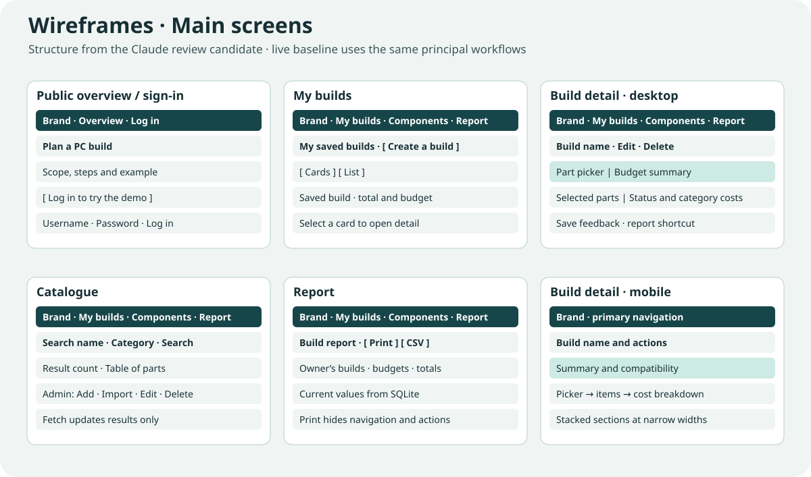
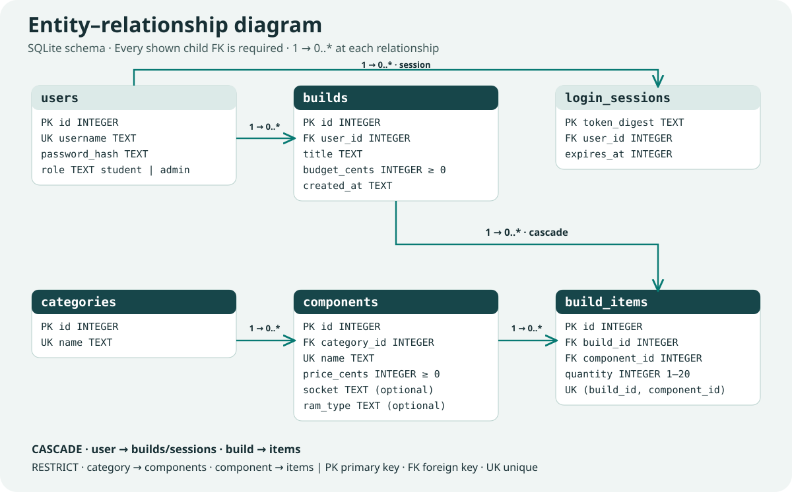
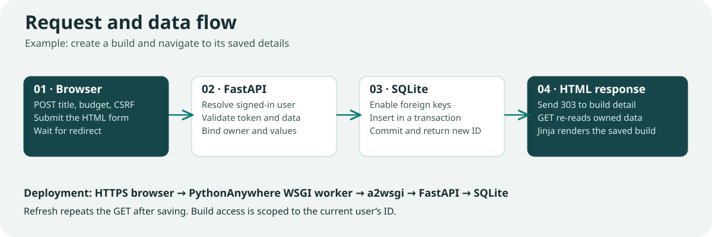

Student / beginner
Save private builds, choose named components and compare their current cost with a budget.
Practical Work II · 24 November 2026
Research and requirements, planning and design, and the first working database-backed flow.
Catch-up evidence for Checkpoints 1 and 2, followed by the Checkpoint 3 demo.
Checkpoint 1 · Problem and users
Save private builds, choose named components and compare their current cost with a budget.
Maintain a shared example catalogue. Build ownership applies to both roles.
The visitor can see how the app works and reach the login page.
Checkpoint 1 · Research
Part selection, compatibility and pricing guidance.
Official PCPartPicker descriptionCategory-led builder, starter configurations, compatibility and seller information.
Pangoly PC BuilderIllustrative prices, private builds and two comparisons against the motherboard. The synthetic catalogue keeps the demonstration reproducible.
Checkpoint 1 · Requirements and responsibilities
Schema, login, owner checks, build CRUD and part picker.
Admin catalogue, combined search, budget, compatibility, report, browser checks and release.
Yaroslav leads database and build-flow review. The partner leads catalogue and UI review. Both explain the whole application.
Material AI assistance is declared. The contribution log records confirmed actions and planned work.
Checkpoint 2 · Navigation

Checkpoint 2 · Interface

Checkpoint 2 · Data model

Checkpoint 2 · Architecture

FastAPI + Jinja · SQLite · HTML, CSS and Fetch · PythonAnywhere + a2wsgi. Review-branch screenshots.
Checkpoint 3 · Live demonstration
€190
€130
€55
€375.00 total. Refresh, rename and open the delete confirmation.
Open the live baseline · Prepared build (sign-in required)
Checkpoint 3 · Safety and test evidence
Student gets a role refusal on the admin route. The build query binds the current owner's ID.
Confirmed build deletion cascades to items. An in-use catalogue part is restricted. Demonstrated on disposable SQLite.
Baseline: 24 tests, 12 subtests. Redesign: 25 tests, 12 subtests. Real FastAPI in Windows. One test-client deprecation warning per run.
Checkpoint 3 · Current versions
Student create, parts, refresh, edit, confirmation, catalogue filter and report were checked on HTTPS.
New layout and local Fira Sans. Passed the fresh Windows FastAPI tests. The live site still serves the baseline.
Ask the lecturer about make-up assessment, topic and technology approval, and provisioned demo accounts. The formal final submission and both individual contributions are still due.